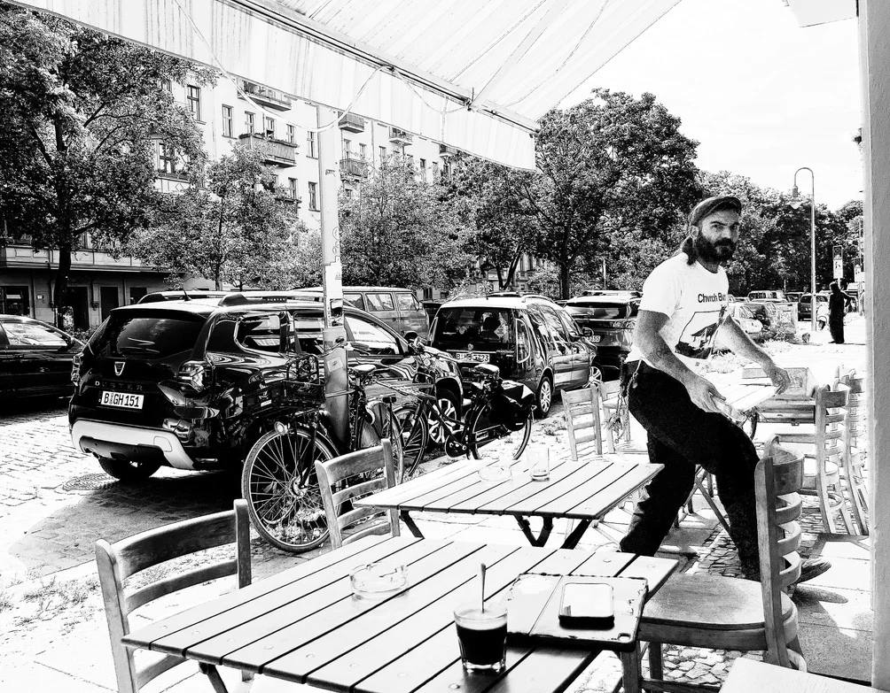
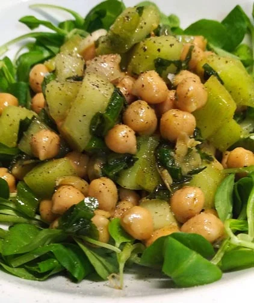

Coca de espinacas a la catalana con olivada
6,50 €Blätterteiggebäck mit Spinat nach katalanischer Art
Bänschstraße 41 · Berlin–Friedrichshain
Spanisch-uruguayische Küche, kleine Teller und ein gutes Glas. Ein Ort, um zusammenzukommen. Und noch ein bisschen zu bleiben.


Originalfotos und eine künstlerische Fotocollage aus dem eigenen Bildmaterial. Keine Aufnahme eines tatsächlich fotografierten gemeinsamen Tischmoments.
Etwas auf dem Tisch. Ein Wein, über den man ins Gespräch kommt. Und die Menschen, mit denen man gerne noch ein bisschen bleibt.
Zu Besuch in der Bänschstraße ↗Ein bisschen Spanien. Ein bisschen Uruguay. Und ganz viel Berlin.
¡Salud!
Öffnungszeiten
Küche Dienstag – Samstag bis ca. 22 Uhr.
Reservierungen öffnen die bisherige Website mit Tebi.